II
Project Poster
项目海报

图片 11-10
Mild Cognitive Impairment (MCI) Home Safety Assistance Device
项目演示视频
项目海报
图片 11-10
项目展板

图片 11-11
产品定位与解决的问题
Mild Cognitive Impairment (MCI) Home Safety Assistance Device (Cognitive Guardian)
Elderly people with mild cognitive impairment or early-stage Alzheimer's disease living at home, as well as their caregivers (family members or professional carers).
创新亮点
市场分析（同类产品、价格、渠道）

图片 40-1
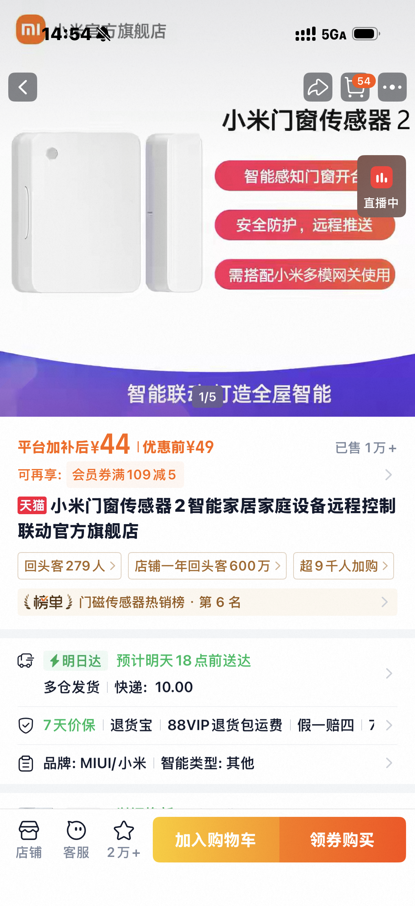
图片 40-2
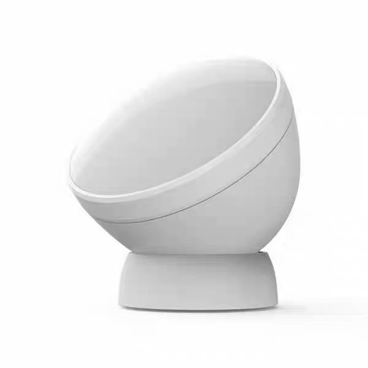
图片 40-3
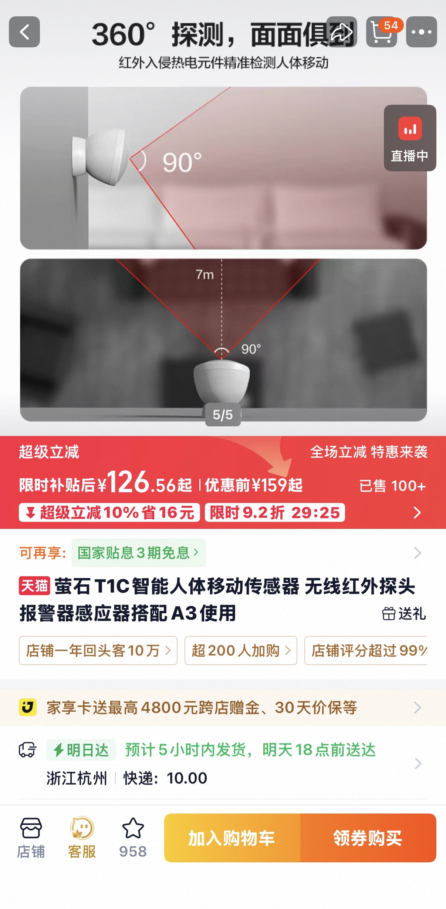
图片 40-4
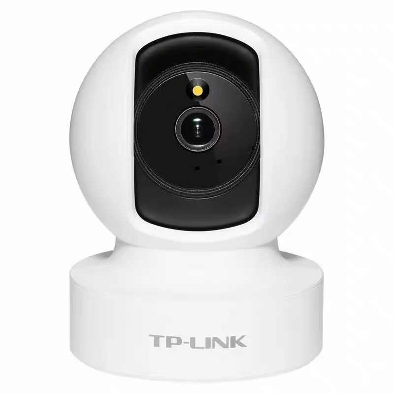
图片 40-5
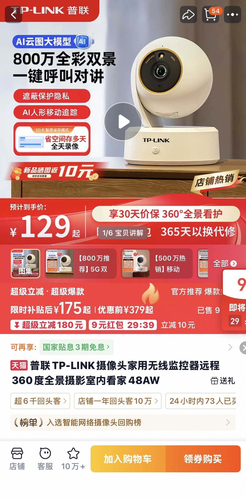
图片 40-6
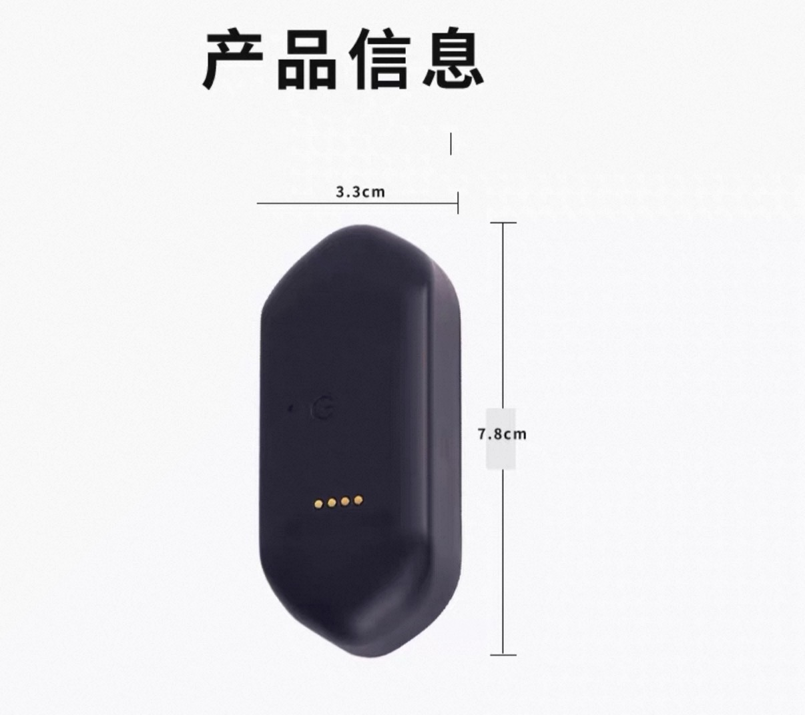
图片 40-7
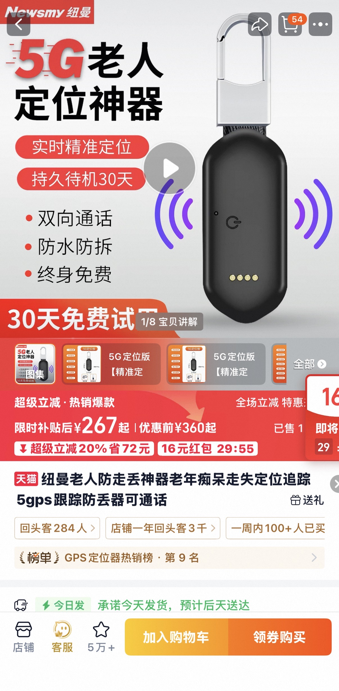
图片 40-8

图片 40-9
Recommended retail price: 300–500 CNY (~40–70 USD) as a lightweight assistive device, far below medical‑grade alternatives.
With mass production, BOM cost can be reduced to under 80 CNY, leaving healthy margins.
China has approximately 38 million elderly with MCI, and the ageing population continues to grow. Home safety needs are surging, and this product addresses a clear demand with strong differentiation – good market prospects.
关键技术分析与潜在技术问题
材料与制造方法

图片 11-1

图片 11-2

图片 11-3

图片 11-4

图片 11-5

图片 11-6

图片 11-7
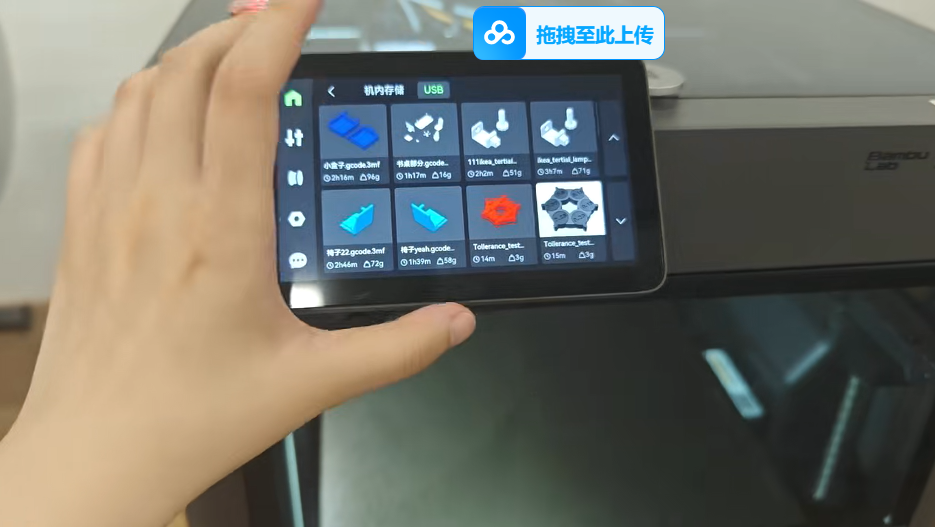
图片 11-13

图片 11-8 - Standard Wiring Rules
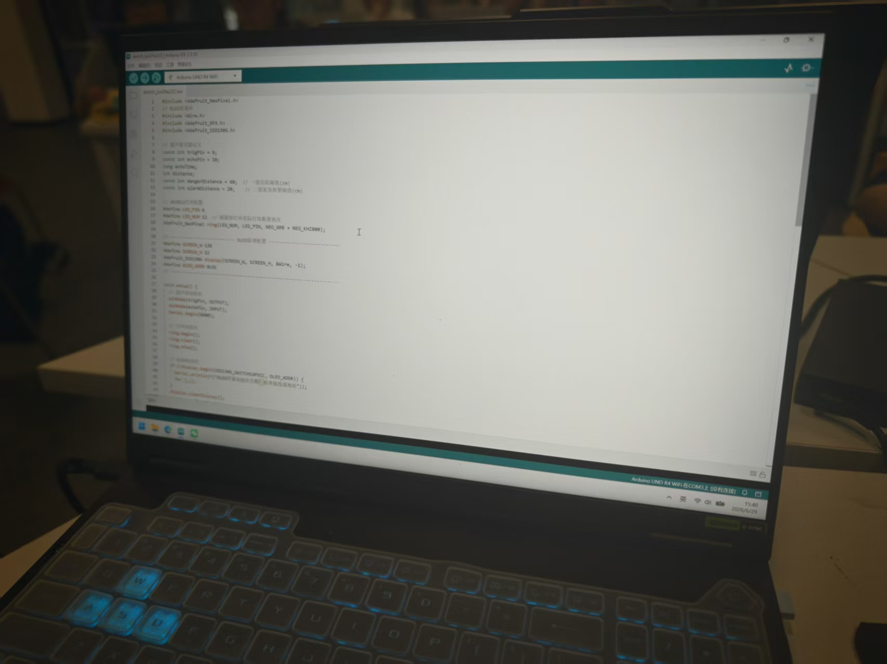
图片 11-14
#include <Adafruit_NeoPixel.h>
#include <Wire.h>
#include <Adafruit_GFX.h>
#include <Adafruit_SSD1306.h>
const int trigPin = 9;
const int echoPin = 10;
long echoTime;
int distance;
const int dangerDistance = 60;
const int alarmDistance = 20;
#define LED_PIN 6
#define LED_NUM 12
Adafruit_NeoPixel ring(LED_NUM, LED_PIN, NEO_GRB + NEO_KHZ800);
#define SCREEN_W 128
#define SCREEN_H 32
Adafruit_SSD1306 display(SCREEN_W, SCREEN_H, &Wire, -1);
#define OLED_ADDR 0x3C
void setup() {
pinMode(trigPin, OUTPUT);
pinMode(echoPin, INPUT);
Serial.begin(9600);
ring.begin();
ring.clear();
ring.show();
if (!display.begin(SSD1306_SWITCHCAPVCC, OLED_ADDR)) {
Serial.println(F("OLED屏幕初始化失败！检查接线或地址"));
for (;;);
}
display.clearDisplay();
display.setTextSize(1);
display.setTextColor(WHITE);
display.setCursor(0, 0);
display.println("Distance Detect");
display.println("System Ready");
display.display();
delay(1000);
}
void loop() {
digitalWrite(trigPin, LOW);
delayMicroseconds(2);
digitalWrite(trigPin, HIGH);
delayMicroseconds(10);
digitalWrite(trigPin, LOW);
echoTime = pulseIn(echoPin, HIGH);
distance = echoTime * 0.034 / 2;
Serial.print("当前距离：");
Serial.print(distance);
Serial.println(" cm");
display.clearDisplay();
display.setTextSize(2);
display.setCursor(0, 0);
if (distance >= dangerDistance) {
display.println("SAFE");
} else if (distance > alarmDistance) {
display.println("WARNING!");
} else {
display.println("DANGER!!");
}
display.display();
if (distance >= dangerDistance) {
ring.clear();
ring.show();
} else if (distance > alarmDistance) {
variableSpeedRotate(distance);
} else {
policeRedFlash();
}
delay(50);
}
void variableSpeedRotate(int dist) {
int rotateDelay = map(dist, alarmDistance + 1, dangerDistance, 5, 35);
uint32_t color;
for (int i = 0; i < LED_NUM; i++) {
ring.clear();
color = ring.ColorHSV((i * 65536L / LED_NUM), 255, 255);
ring.setPixelColor(i, color);
ring.setPixelColor((i + 1) % LED_NUM, ring.ColorHSV(((i + 1) * 65536L / LED_NUM), 255, 180));
ring.show();
delay(rotateDelay);
}
}
void policeRedFlash() {
for(int i=0; i<LED_NUM; i++){
ring.setPixelColor(i, ring.Color(255,0,0));
}
ring.show();
delay(80);
ring.clear();
ring.show();
delay(80);
}与联合国可持续发展目标的契合
This elderly-friendly corner induction anti-collision night light project closely aligns with 3 Sustainable Development Goals and 6 official secondary targets, focusing on elderly home safety, inclusive aging services, and affordable public well-being improvement.
图片 70-1
By 2030, reduce by one third premature mortality from non-communicable diseases through prevention and treatment and promote mental health and well-being.
This product effectively prevents elderly falls, collisions, and secondary physical injuries caused by night wandering. It reduces the risk of fracture, long-term bedridden conditions, and chronic disease deterioration. Meanwhile, soft light induction without harsh alarms avoids emotional stimulation, protecting the mental stability and well-being of elderly users, especially those with mild cognitive impairment.
Achieve universal health coverage, including financial risk protection, access to quality essential health-care services and access to safe, effective, quality and affordable essential medicines and technologies for all.
The project provides low-cost, accessible home safety protection equipment for ordinary families. Compared with expensive professional elderly monitoring devices, this affordable assistive technology realizes grassroots home health risk prevention, supplements family elderly care protection systems, and supports universal health coverage at the household level.
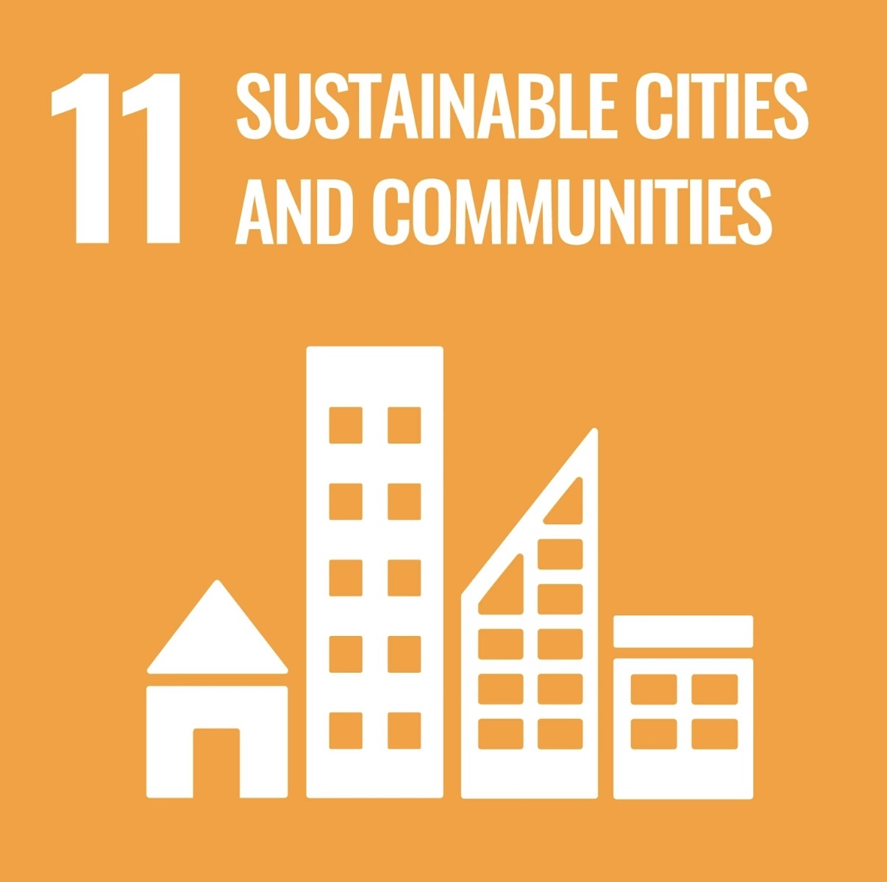
图片 70-2
By 2030, provide access to safe, affordable, accessible and sustainable transport systems for all, improving road safety, notably by expanding public transport, with special attention to the needs of those in vulnerable situations, older persons and persons with disabilities.
Extending safe barrier-free travel scenarios from public roads to indoor home environments, the product eliminates hidden collision dangers at household corners. It optimizes indoor walking safety for elderly and vulnerable groups and builds inclusive indoor "safe mobility" environments suitable for aging populations.
By 2030, enhance inclusive and sustainable urbanization and capacity for participatory, integrated and sustainable human settlement planning and management in all countries.
The product supports community aging-friendly renovation and residential environment upgrading. It can be popularized in old communities, community elderly care centers and home-based elderly care scenarios, helping cities achieve more inclusive, age-friendly and sustainable urban settlement development.
By 2030, provide universal access to safe, inclusive and accessible, green and public spaces, in particular for women and children, older persons and persons with disabilities.
The project optimizes private family living spaces and public elderly activity spaces such as day-care centers and nursing homes. It builds safer, barrier-free and inclusive living environments specifically for elderly groups, fulfilling the requirement of equitable and accessible public living spaces for vulnerable groups.
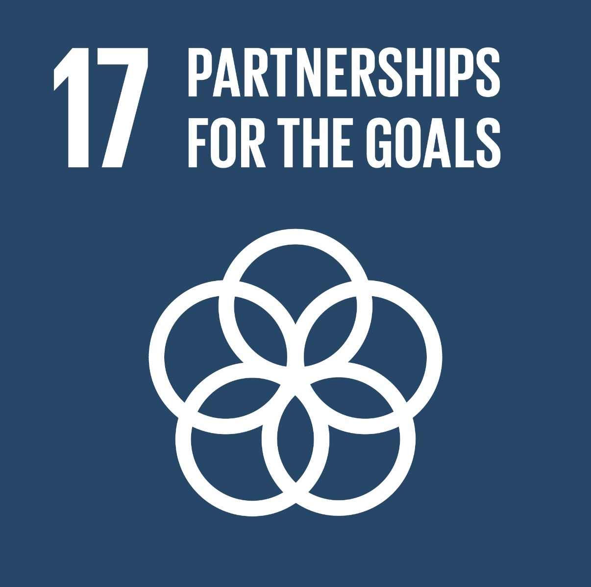
图片 70-3
Encourage and promote effective public, public-private and civil society partnerships, building on the experience and resourcing strategies of partnerships.
The project adopts a multi-stakeholder promotion model, cooperating with community elderly care stations, rehabilitation institutions (public sectors), e-commerce platforms and content marketing channels (private sectors), and elderly care associations (civil society). The cross-domain partnership mechanism accelerates the popularization of aging-friendly public welfare products and promotes sustainable social elderly care development.